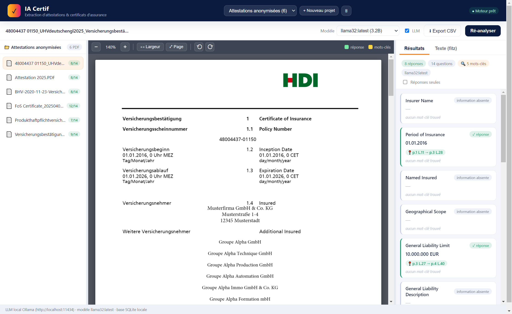
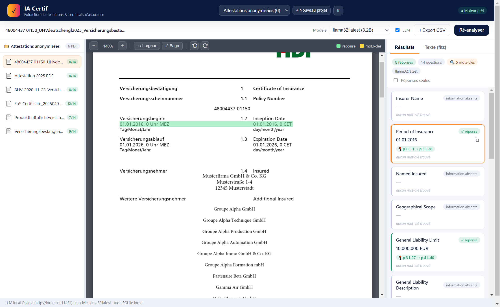
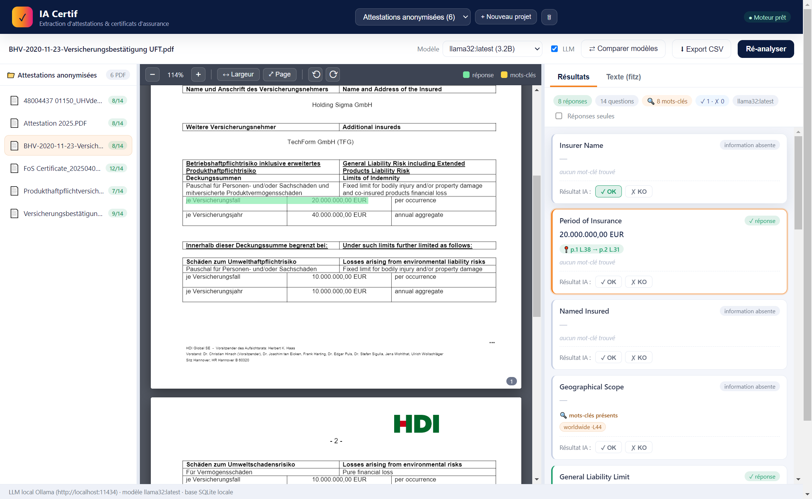
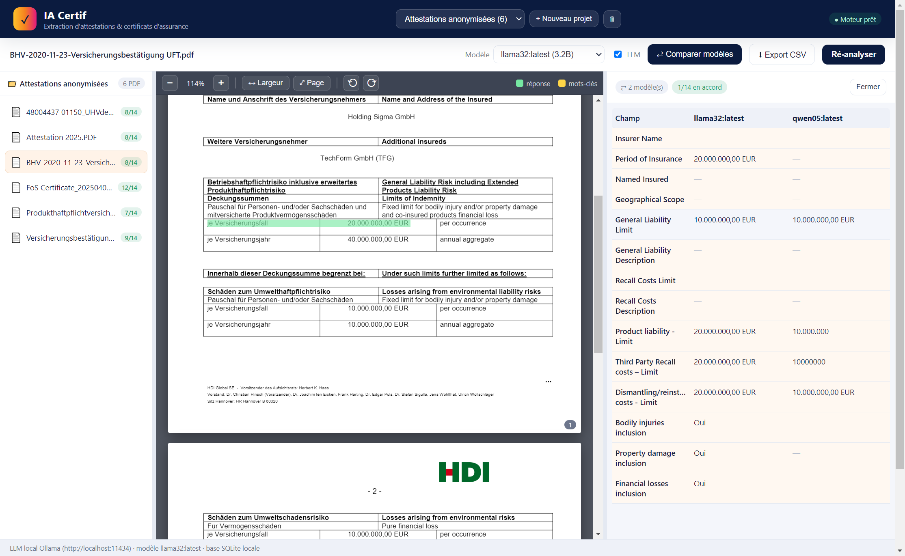

Vérifier la conformité d'une attestation d'assurance
Extraire les informations clés d'une attestation RC, vérifier qu'elles respectent un référentiel, surligner la justification sur le PDF, et trancher OK / KO. L'extraction ne suffit pas : il faut le verdict, et la preuve.
Le problème
Un service reçoit des dizaines d'attestations d'assurance de ses fournisseurs ou partenaires. Chacune doit prouver que certaines mentions sont présentes et conformes : un assuré nommé, une période de validité qui couvre le marché, un plafond de responsabilité civile suffisant, une étendue géographique adéquate. Lire chaque attestation à la main est long, et une simple extraction ne dit pas si le document est conforme, seulement ce qu'il contient.
La démarche
Le document est parsé ligne par ligne, avec les coordonnées de chaque ligne. Pour chaque information attendue, un LLM répond en pointant les lignes justificatives, ce qui permet de surligner la preuve sur le PDF. Chaque réponse est ensuite confrontée à un référentiel de conformité (présence obligatoire, seuil minimal, conversion de devise) qui rend un verdict conforme ou non. Un humain valide OK / KO. Le tout se compare entre plusieurs modèles et deux méthodes de parsing.
Le fil rouge : la conformité n'est pas de l'extraction. On extrait un champ, puis on le confronte à une règle, et le verdict est adossé à la ligne exacte du document.
La méthode, en images
Les attestations montrées ici sont des spécimens anonymisés. Chaque réponse extraite renvoie à ses lignes justificatives, avec la page.

Le document à gauche, les informations clés extraites à droite, chacune avec sa page justificative.

Cliquer une réponse surligne, sur le PDF, la ligne exacte qui la justifie.

Chaque critère reçoit un verdict de conformité, puis une validation humaine OK / KO.

La même attestation passée par plusieurs modèles, comparés côte à côte.
Ce que ça montre
Le contrôle de conformité documentaire est un couple : extraire, puis vérifier contre une règle. La justification surlignée rend chaque verdict auditable, et la comparaison de modèles montre que le référentiel, lui, ne bouge pas : c'est la règle métier qui tranche, pas le modèle.
Livrables
Une application de bureau qui extrait, surligne, vérifie la conformité et exporte les résultats. Les attestations utilisées en démonstration sont des spécimens anonymisés.
Application de bureau (données locales) ; démonstration sur spécimens anonymisés. Nous contacter pour une démonstration sur vos propres documents.